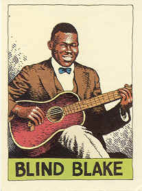
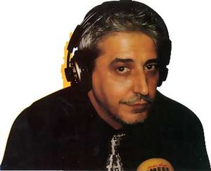

Anthony Blake
 De: La Frikipedia, la enciclopedia extremadamente seria.
De: La Frikipedia, la enciclopedia extremadamente seria.

|
La información contenida en este artículo es una mínima parte de su jugo total, así que ponte los guantes, saca el tupperwere y empieza a exprimir el tema. Si lo haces serás recompensado con una galleta en almíbar y algo más.
|
Anthony Blake nació en un cementerio asturiano, una noche de San Juan y cuyo año de nacimiento está aun por determinar. En su nacimiento se cuenta que estuvieron presentes Maruja Díaz en el nacimiento pero nunca se ha podido autentificar dicha información.
Mentalista e ilusionista
Desde pequeño sintió devoción por el mentalismo (hacer pompas con chicles de menta) y por el ilusionismo, pero no conseguía encontrar sus poderes hasta que un día fue capaz de mover un balón con su cabeza. Hay quien dice que esto fue un tremendo testarazo cual Fernando Morientes en una pachanguilla de barrio pero de todos modos esto fue la espita que abrió el gas de sus poderes.
Durante años perfeccionó estos poderes llegando a ser capaz traspasar puertas usando una llave o leer la mente de otras personas para la cual necesitaba contar con sus gafas de cerca. En esta época fue adquiriendo su especial estética, su ropa negra es resultado de una caída en un pozo de alquitrán (Anthony afirma que esta caida y el alquitrán le dotaron de superfuerza con la que actualmente juega a los bolos en asturbowling) y su magnífico peinado se lo realizó Eduardo Manostijeras en un viaje en un carruaje del viejo oeste.
Su momento cumbre fue cuando acertó el Cassano comiendo las uvas en la Puerta del Sol. Actualmente se dedica a hacer volar bolsas del Hipercor en un monte de los Picos de Europa.
Poderes
 Aqui tenemos a Anthony cuando en un verano que fue al solarium con Zaplana decidió sacar un disco de country con el nombre de Blind Blake que como todo el mundo sabe significa Blake blindado, dejando claro que es un hombre a prueba de balas.
 Aquí vemos a Anthony en la Nochevieja del año 2 D.C escuchando su mp3 alimentado a base de piel de naranja y pelos de huevo.Lo compró en ebay por 0,60€ y tiene una memoria de 3 millones de GB. En esos momentos eschuchaba carrusel deportivo el partido de la final del mundial que acabo cn el resultado final de España 3-1 Brasil (Ficcion Absoluta).
Una lista de los poderes de Anthony Blake:
- Anthony es capaz de pilotar con una venda en los ojos un avión de Air Madrid.
- Anthony es capaz de encontrar prófugos de la Operacion Malaya, así como trufas, con la sola ayuda de su olfato.
- Anthony fue capaz de invocar el espíritu de Encarna Sánchez, irse a un café del centro de Madrid en metro, comerse unas empanadillas con ella y lavarse los dientes, todo ello en 10 segundos.
- Anthony fue capaz de persuadir con el mero poder de su mente a Risto Mejide, haciéndole escribir un poema y hacerle ponerse lentillas.
- Anthony puede conocer el sexo de un bebé que se encuentre a varios kilómetros de distancia, solo necesita tomarse un culín de sidra, un plato de fabada y un pelo de la melenaza de Iker Jimenez.
- Anthony fue sometido al detector de A tu lado, el cual hizo explotar al no poder evaluar una mente tan poderosa como la suya.
- Anthony persuadió a Lidia Lozano y consiguió que esta leyera un libro.
- Anthony se apostó 300€ con un trilero, acertó la bola, el trilero le disparó con una pistola, a lo que Anthony respondió desviando la bala hacia la Puerta del Sol haciendo sonar las doce campanadas.
- Anthony fue capaz de dibujar una sonrisa en el rostro de Fernando Alonso.
- Anthony hizo desaparecer el Cola Cao de Rafa Nadal, sufriendo así pelotazos de diversa índole.
- Anthony fue capaz de comerse una piedra de Polonio 210, cagarla, y hacer una copia del David de Miguel Ángel con ello.
- Anthony fue capaz de persuadir al papa Veredizto para que acudiera a un país del cual lo más bonito que había dicho hasta el momento era: "Van cagaos".
- Anthony fue capaz de sacar unas palabras bonitas de la boca de Pedro J., su método no fue el mentalismo ni el engaño, fue el método infalible de emborracharlo a base de absentas y calimocho.
- La única vez que Anthony no ganó a las cartas (espiando mentalmente las manos de sus oponentes) fue cuando jugó contra Juan Tamariz. Se cree que las vibraciones mágicas de su violín invisible bloquearon las gafas de rayos X de Anthony.
Autor(es):
- Nexo
- Ukko91
- Fai1927
- Mel-o
- Ricardoxxxlo
- Luxi
Frikipedia 2005-2016, Licencia
GFDL 1.2 - Extraído por FrikiLeaks